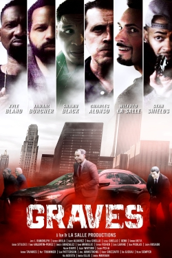

Graves
Graves Law Enforcement Agent, Mark Brody, embarks on a journey to bring bad guys to justice while Michael Laforte is the hard-drinking, fierce criminal mastermind who doesn't play by the rules. Clyde Baxter, Matt Goldberg, Pedro Dominguez et cetera of a gang of ex-military males use their expertise as well as tactical skills to evade the regulation. His crew quickly finds themselves on a direct clash with Unique Representative Mark Brody and the Graves Task Force as the bad guys hatch an intricate plan for a seemingly impossible heists all over the city.
Release Date: 2022-04-04
Genre: Action, Crime, Drama
Duration: 89 min
Production: La Salle Productions
Casts: Shawn Black, Damir Mrkulic, James Randolph, George Sitilides, Kyle Bland
Scheduled Time: 9pm-11pm
Dates: 2022-04-04 - 2022-04-22
Release Date: 2022-04-04
Genre: Action, Crime, Drama
Duration: 89 min
Production: La Salle Productions
Casts: Shawn Black, Damir Mrkulic, James Randolph, George Sitilides, Kyle Bland
Scheduled Time: 9pm-11pm
Dates: 2022-04-04 - 2022-04-22